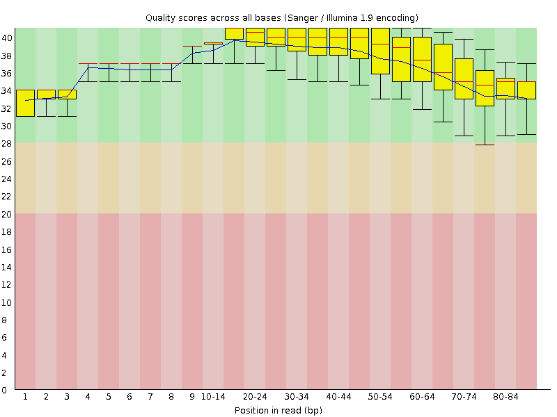
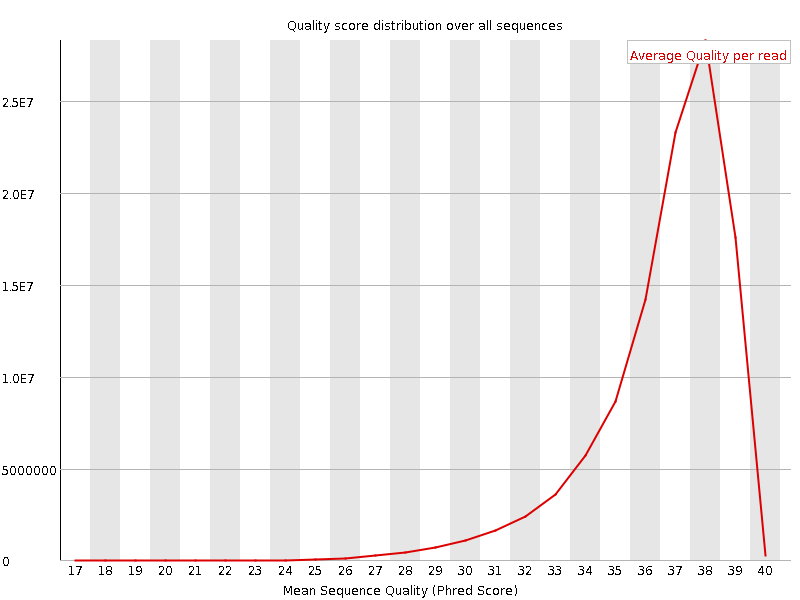
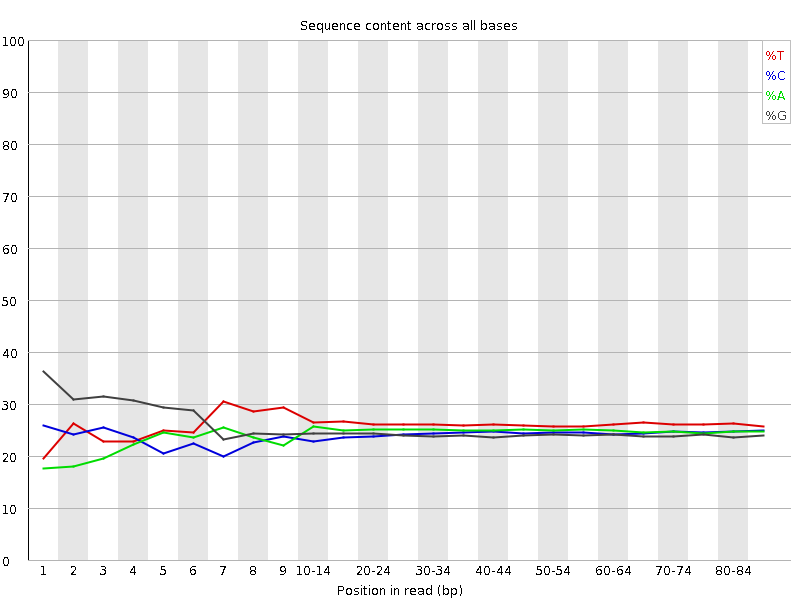
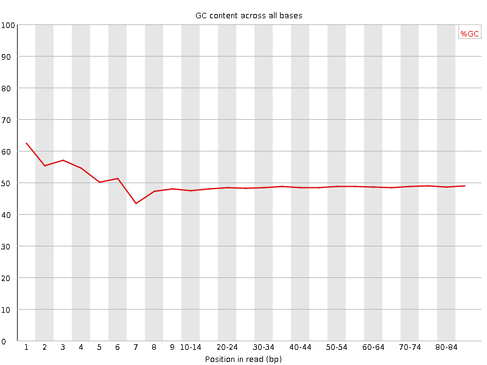
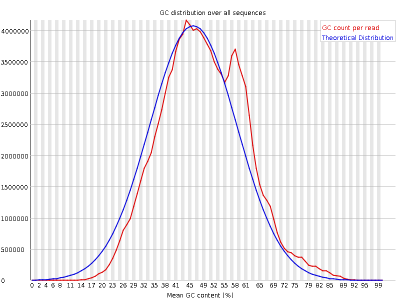
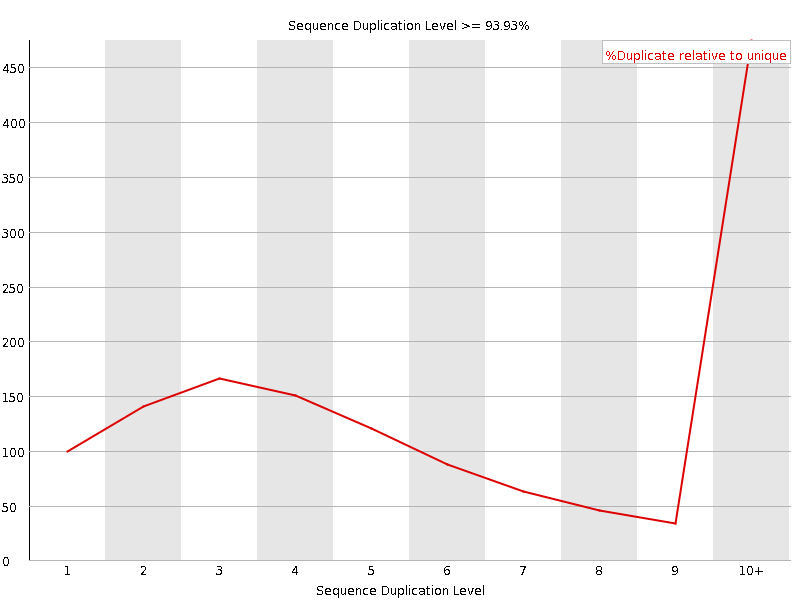
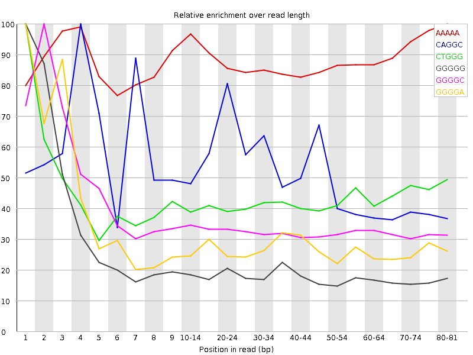

![[OK]](Icons/tick.png) Basic Statistics
Basic Statistics
| Measure | Value |
|---|---|
| Filename | SRR534327_pe_1.f.fastq |
| File type | Conventional base calls |
| Encoding | Sanger / Illumina 1.9 |
| Total Sequences | 108788317 |
| Filtered Sequences | 0 |
| Sequence length | 85 |
| %GC | 49 |
Per base sequence quality

Per sequence quality scores

![[WARN]](Icons/warning.png) Per base sequence content
Per base sequence content

![[FAIL]](Icons/error.png) Per base GC content
Per base GC content

Per sequence GC content

Per base N content

Sequence Length Distribution

Sequence Duplication Levels

Overrepresented sequences
| Sequence | Count | Percentage | Possible Source |
|---|---|---|---|
| GTTGCCCAGGCTGGAGTGCAGTGGCTATTCACAGGCGCGATCCCACTACT | 144712 | 0.1330216368730109 | No Hit |
| GCTCAGGCTGGAGTGCAGTGGCTATTCACAGGCGCGATCCCACTACTGAT | 137587 | 0.1264722203580004 | No Hit |
| GTGAGTTTTAGCTTTATTGGGGAGGGGGTGATCTAAAACACTCTTTACGC | 132829 | 0.12209858895050284 | No Hit |
| GTTGCTCAGGCTGGAGTGCAGTGGCTATTCACAGGCGCGATCCCACTACT | 127027 | 0.11676529567049006 | No Hit |
| GCCCAGGCTGGAGTGCAGTGGCTATTCACAGGCGCGATCCCACTACTGAT | 125500 | 0.11536165229948359 | No Hit |
Kmer Content

| Sequence | Count | Obs/Exp Overall | Obs/Exp Max | Max Obs/Exp Position |
|---|---|---|---|---|
| AAAAA | 27757775 | 3.3516593 | 3.7936776 | 80-81 |
| CAGGC | 20949420 | 2.6596596 | 5.2101126 | 4 |
| CTGGG | 18580405 | 2.2031603 | 5.12776 | 1 |
| GGGGG | 15793415 | 1.9597877 | 9.794544 | 1 |
| GGGGC | 14011235 | 1.7634199 | 5.119251 | 2 |
| GGGGA | 13471555 | 1.662567 | 5.7898026 | 1 |
| GGGTG | 13065630 | 1.527478 | 5.0965147 | 2 |
| GTGGG | 12590655 | 1.4719496 | 7.801399 | 1 |
| CGGGG | 11555080 | 1.4542942 | 7.5365105 | 2 |
| GGGGT | 12297180 | 1.43764 | 8.737891 | 3 |
| GGTCT | 11313625 | 1.2638755 | 5.3167152 | 5 |
| GGGTC | 10619655 | 1.2592192 | 6.009936 | 4 |
| GCGGG | 7298570 | 0.91858023 | 5.717258 | 1 |